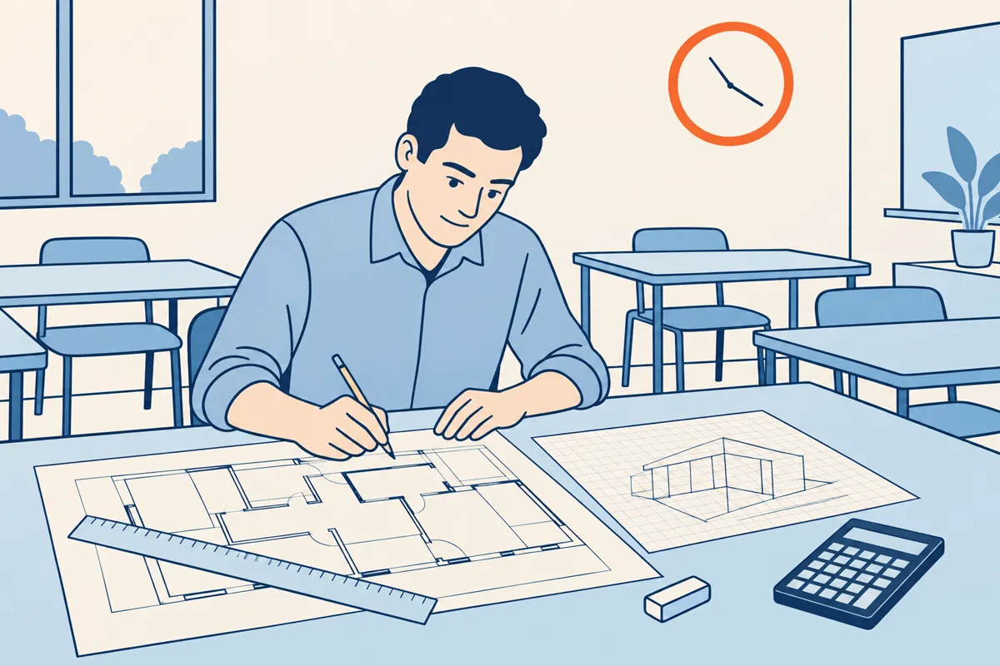

⬅ La ligne Lire les plans · Plâtrerie et isolation · terminus

À la gare 10, vous avez lu un dossier avec un guide. Ici, vous lisez un dossier complet seul, en temps limité.
Cette gare se vit en plusieurs séances. À la fin, vous saurez :
Comment travailler. Lisez les écrans 2 à 10 : chaque geste a sa méthode et un exemple résolu sur le dossier d'une salle de repos. Faites ensuite seul l'exercice sur le dossier du vestiaire : la table « Où trouver la réponse » dit l'écran à relire pour chaque question. La leçon existe aussi sur papier, avec les mêmes numéros d'écran (bouton « Leçon (PDF) » en haut de la gare).
Un dossier complet réunit des plans, des coupes et un descriptif. Chaque question reprend un geste d'une gare déjà traversée.
Avant la première question, cochez la liste de contrôle d'entrée :
Les exemples résolus des écrans 4 à 9 portent sur le dossier d'une salle de repos et de ses sanitaires. Son doc 2, la coupe, est à l'écran 6.
Doc 1 : plan de niveau. Cartouche : SALLE DE REPOS, sanitaires · éch. 1/50 · ind. C.
Doc 3 : extrait du descriptif. Toutes les cotes sont en mm.
L'exercice de cette gare dure 45 minutes. Partagez-les ainsi :
| Temps | Quoi |
|---|---|
| 10 min | lecture complète du dossier, liste de contrôle, repérage des cotes utiles |
| 25 min | les questions, dans l'ordre |
| 5 min | vérification : unités, chaînes de cotes, aucune case vide |
| 5 min | réserve : la question qui a résisté |
Une question vous bloque plus de 5 minutes : notez un repère, passez à la suivante, revenez-y pendant la réserve.
Cartouche du doc 1 : éch. 1/50, ind. C. Réponse : 1/50, ind. C (doc 1).
Composition de C2 : 98/48, soit une épaisseur finie de 98 mm sur une ossature de 48 mm. Réponse : 98/48, 98 mm (doc 3).
Face en plaques hydrofuges : la face côté sanitaires (doc 3).
Une chaîne de cotes peut porter un « ? ». La cote manquante se calcule par différence (gare 7).
Sur le plan de l'écran 2, la chaîne du haut porte 100, 2802, 98 et « ? ». La cote totale, en bas, vaut 4500.
Cote manquante : 4500 − 100 − 2802 − 98 = 1500 mm (doc 1).
Vérification : 100 + 2802 + 98 + 1500 = 4500.
Dans le dossier, la hauteur sous plafond se lit sur la coupe : c'est la cote du sol fini au plafond.
Doc 2 : coupe A-A du dossier d'exemple, éch. 1/50 (extrait).
La coupe porte trois cotes verticales : 2600, 900 et 1300. La cote 900 est l'allège, la cote 1300 la hauteur de la fenêtre.
La cote 2600 va du sol fini au plafond : hauteur sous plafond 2600 mm (doc 2).
Le calepin répartit les dalles d'un plafond. Chaque coupe de rive mesure au moins un demi-élément : 300 mm pour une dalle de 600 (gare Plâtrerie 2).
La largeur vaut 1500 mm (écran 5). 1500 ÷ 600 = 2,5 : 2 dalles entières. Reste : 1500 − 2 × 600 = 300. Deux rives de 150 : moins de 300, trop petites. On retire une dalle : 1 entière, reste 300 + 600 = 900.
Deux rives de 450 : plus de 300, la règle est tenue. Chaîne : 450 + 600 + 450 = 1500.
Sens de la longueur : 3600 ÷ 600 = 6, reste 0. Six dalles entières, aucune coupe.
Le calepin de la longueur donne le nombre de rangées. Celui de la largeur donne les dalles entières et les rives d'une rangée. Multipliez chacune par le nombre de rangées. Chaque rive se taille dans une dalle entière : total = entières + coupées.
Sens 3600 : 6 rangées. Chaque rangée : 1 dalle entière et 2 rives.
Entières : 1 × 6 = 6. Coupées : 2 × 6 = 12. Total : 6 + 12 = 18 dalles, sans la casse.
Les plaques se comptent face par face, pour chaque type de plaque (gare Plâtrerie 5).
Sur le plan, C2 va du mur du haut au mur du bas : longueur 3600 mm, soit 3,60 m (cote de gauche du doc 1). Hauteur sous plafond : 2,60 m (doc 2). La porte n'est pas déduite (doc 3).
Une face : 3,60 × 2,60 = 9,36 m². Deux plaques par face : 9,36 × 2 = 18,72 m².
Marge : 18,72 × 1,10 = 20,592 m². Plaques : 20,592 ÷ 3 = 6,864, soit 7 plaques. Face salle de repos : 7 plaques standard. Face sanitaires : 7 plaques hydrofuges.
Le dossier se traite toujours dans le même ordre. Gardez cet écran sous les yeux pendant l'exercice.
| Étape | Geste | Écran |
|---|---|---|
| 1 | Lire le dossier, liste de contrôle, temps | 2 et 3 |
| 2 | Échelle et indice, composition, face hydrofuge (a, b, e) | 4 |
| 3 | Cote manquante d'une chaîne, par différence | 5 |
| 4 | Hauteur sous plafond, sur la coupe | 6 |
| 5 | Calepin du plafond, puis le compte des dalles | 7 et 8 |
| 6 | Plaques face par face, par type, entier supérieur | 9 |
Après la correction, cochez « réussie » pour chaque question juste. Une case vide renvoie à une gare : relisez l'écran de cette leçon, puis cette gare.
Le dernier test de la ligne porte sur la méthode plus que sur les connaissances.
Le dossier, les plans, les conventions, les échelles, les cotes, le croquis, la maquette, puis les six gares du plaquiste : le dossier complet reprend un parcours que vous connaissez.
Télécharger la leçon papier (PDF) Télécharger l'exercice papier (PDF)
Pour l'enseignant, le corrigé est dans l'espace enseignant, sous code. L'exercice est un dossier complet sur le vestiaire et son local douche (plan, coupe, descriptif), à faire seul en 45 minutes. Chaque question porte sa case d'auto-bilan et la gare à revoir. Les autres dossiers d'entraînement sont aussi dans l'espace enseignant.